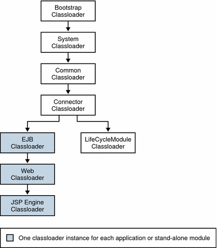

To package the client JAR for one application in another
application
To package the client JAR for one application in another
applicationUnderstanding Application Server class loaders can help you determine where and how you can position supporting JAR and resource files for your modules and applications.
In a Java Virtual Machine (JVM), the class loaders dynamically load a specific Java class file needed for resolving a dependency. For example, when an instance of java.util.Enumeration needs to be created, one of the class loaders loads the relevant class into the environment. This section includes the following topics:
Class loaders in the Application Server runtime follow a hierarchy that is illustrated in the following figure and fully described in Table 2-1.
Figure 2-1 Class loader runtime hierarchy
Table 2-1 Sun Java System Application Server Class Loaders
Classloader | Description |
|---|---|
The Bootstrap Classloader loads all the JDK classes. It is parent to the System Classloader. | |
The System Classloader loads the JVM classes. It is parent to the Common Classloader. It is created based on the system-classpath attribute of the java-config element in the domain.xml file. See "java-config" in Sun Java System Application Server Enterprise Edition 9.0 2006Q1 Administration Reference. | |
The Common Classloader loads classes in the domain-dir/lib/classes directory, followed by JAR and ZIP files in the domain-dir/lib directory. It is parent to the MBean Classloader and the Shared Chain Classloader. No special classpath settings are required. The existence of these directories is optional; if they don't exist, the Common Classloader is not created. | |
The MBean Classloader loads the MBean implementation classes. See MBean Class Loading. | |
Shared Chain | The Shared Chain Classloader loads most of the core Application Server classes. It is parent to the Connector Classloader. Classes specified by the classpath-prefix, server-classpath, and classpath-suffix attributes of the java-config element in the domain.xml file are added to this class loader. The environment classpath is included if env-classpath-ignored="false" is set in the java-config element. |
The Connector Classloader is a single class loader instance that loads individually deployed connector modules, which are shared across all applications. It is parent to the LifeCycleModule Classloader and the Application Classloader. | |
The LifeCycleModule Classloader is the parent class loader for lifecycle modules. Each lifecycle module's classpath is used to construct its own class loader. | |
The Application Classloader consists of all libraries specified in the directory pointed to by the library-directory element in the application.xml deployment descriptor. One instance of this class loader is present in each class loader universe. It is parent to the EJB Classloader. Application libraries are included in the Application Classloader if the --libraries option is used during deployment. For more information, see Application-Specific Class Loading. | |
The EJB Classloader loads the enabled EJB classes in a specific enabled EJB module or Java EE application. One instance of this class loader is present in each class loader universe. The EJB Classloader is created with a list of URLs that point to the locations of the classes it needs to load. It is parent to the Web Classloader. | |
The Web Classloader loads the servlets and other classes in a specific enabled web module or Java EE application. One instance of this class loader is present in each class loader universe. The Web Classloader is created with a list of URLs that point to the locations of the classes it needs to load. It is parent to the JSP Engine Classloader. | |
The JSP Engine Classloader loads compiled JSP classes of enabled JSP files. One instance of this class loader is present in each class loader universe. The JSP Engine Classloader is created with a list of URLs that point to the locations of the classes it needs to load. |
Note that this is not a Java inheritance hierarchy, but a delegation hierarchy. In the delegation design, a class loader delegates classloading to its parent before attempting to load a class itself. A class loader parent can be either the System Classloader or another custom class loader. If the parent classloader can't load a class, the classloader attempts to load the class itself. In effect, a class loader is responsible for loading only the classes not available to the parent. Classes loaded by a classloader higher in the hierarchy cannot refer to classes available lower in the hierarchy.
The Servlet specification recommends that the Web Classloader look in the local class loader before delegating to its parent. You can make the Web Classloader follow the delegation inversion model in the Servlet specification by setting delegate="false" in the class-loader element of the sun-web.xml file. It's safe to do this only for a web module that does not interact with any other modules. For details, see "class-loader" in Sun Java System Application Server Enterprise Edition 9.0 2006Q1 Application Deployment Guide.
The default value is delegate="true", which causes the Web Classloader to delegate in the same manner as the other class loaders. You must use delegate="true" for a web application that accesses EJB components or that acts as a web service client or endpoint. For details about sun-web.xml, see "The sun-web.xml File" in Sun Java System Application Server Enterprise Edition 9.0 2006Q1 Application Deployment Guide.
Access to components within applications and modules installed on the server occurs within the context of isolated class loader universes, each of which has its own Application, EJB, Web, and JSP Engine Classloaders.
Application Universe: Each Java EE application has its own class loader universe, which loads the classes in all the modules in the application.
Individually Deployed Module Universe: Each individually deployed EJB JAR, web WAR, or lifecycle module has its own class loader universe, which loads the classes in the module.
Note - A resource such as a file that is accessed by a servlet, JSP, or EJB component must be in one of the following locations:
A directory pointed to by the --libraries option used during deployment.
A directory pointed to by the library-directory element in the application.xml deployment descriptor.
A directory pointed to by the class loader's classpath. For example, the web class loader's classpath includes these directories:
module-name/WEB-INF/classes module-name/WEB-INF/lib |
Note - In iPlanet Application Server 6.x, individually deployed modules shared the same class loader. In subsequent Application Server versions, each individually deployed module has its own class loader universe.
You can specify application-specific library classes during deployment in one of the following ways:
Use the Admin Console. Open the Applications component, then go to the page for the type of application or module. Type the path in the Libraries field. For details, see the Sun Java System Application Server Enterprise Edition 9.0 2006Q1 Administration Guide.
Use the asadmin deploy command with the --libraries option. For details, see the Sun Java System Application Server Enterprise Edition 9.0 2006Q1 Reference Manual.
Application libraries are included in the Application Classloader. Paths to libraries can be relative or optional. A relative path is relative to domain-dir/lib/applibs. If the path is absolute, the path must be accessible to the domain administration server (DAS). The Application Server automatically synchronizes these libraries to all remote cluster instances.
If multiple applications or modules refer to the same libraries, classes in those libraries are automatically shared. This can reduce the memory footprint and allow sharing of static information. However, applications or modules using application-specific libraries are not portable. Other ways to make libraries available are described in Circumventing Class Loader Isolation.
For general information about deployment, see the Sun Java System Application Server Enterprise Edition 9.0 2006Q1 Application Deployment Guide.
Since each application or individually deployed module class loader universe is isolated, an application or module cannot load classes from another application or module. This prevents two similarly named classes in different applications from interfering with each other.
To circumvent this limitation for libraries, utility classes, or individually deployed modules accessed by more than one application, you can include the relevant path to the required classes in one of these ways:
To use the System Classloader, do one of the following, then restart the server:
Use the Administration Console. Select the JVM Settings component under the relevant configuration, select the Path Settings tab, and edit the System Classpath field. For details, see the Sun Java System Application Server Enterprise Edition 9.0 2006Q1 Administration Guide.
Edit the system-classpath attribute of the java-config element in the domain.xml file. For details about domain.xml, see the Sun Java System Application Server Enterprise Edition 9.0 2006Q1 Administration Reference.
Using the System Classloader makes an application or module accessible to any other application or module across the domain.
To use the Common Classloader, copy the JAR and ZIP files into the domain-dir/lib directory or copy the .class files into the domain-dir/lib/classes directory, then restart the server.
Using the Common Classloader makes an application or module accessible to any other application or module across the domain.
To use the Java optional package mechanism, copy the JAR and ZIP files into the domain-dir/lib/ext directory, then restart the server.
Using the Java optional package mechanism makes an application or module accessible to any other application or module across the domain.
For example, this is the recommended way of adding JDBC drivers to the Application Server. For a list of the JDBC drivers currently supported by the Application Server, see the Sun Java System Application Server Enterprise Edition 9.0 2006Q1 Release Notes. For configurations of supported and other drivers, see "Configurations for Specific JDBC Drivers" in Sun Java System Application Server Enterprise Edition 9.0 2006Q1 Administration Guide.
By packaging the client JAR for one application in a second application, you allow an EJB or web component in the second application to call an EJB component in the first (dependent) application, without making either of them accessible to any other application or module.
As an alternative for a production environment, you can have the Common Classloader load client JAR of the dependent application as described in Using the Common Classloader restart the server to make the dependent application accessible, and it is accessible across the domain.
To package the client JAR for one application in another
applicationDeploy the dependent application.
Add the dependent application's client JAR file to the calling application.
For a calling EJB component, add the client JAR file at the same level as the EJB component. Then add a Class-Path entry to the MANIFEST.MF file of the calling EJB component. The Class-Path entry has this syntax:
Class-Path: filepath1.jar filepath2.jar ... |
Each filepath is relative to the directory or JAR file containing the MANIFEST.MF file. For details, see the Java EE specification, section 8.1.1.2, "Dependencies."
For a calling web component, add the client JAR file under the WEB-INF/lib directory.
If you need to package the client JAR with both the EJB and web components, set delegate="true" in the class-loader element of the sun-web.xml file.
This changes the Web Classloader so it follows the standard class loader delegation model and delegates to its parent before attempting to load a class itself.
For most applications, packaging the client JAR file with the calling EJB component is sufficient. You do not need to package the client JAR file with both the EJB and web components unless the web component is directly calling the EJB component in the dependent application.
Deploy the calling application.
The calling EJB or web component must specify in its sun-ejb-jar.xml or sun-web.xml file the JNDI name of the EJB component in the dependent application. Using an ejb-link mapping does not work when the EJB component being called resides in another application.